Itemization
Here, I am just gonna say something about itemization and not go into the in-depth explanations. Itemizations are the process in which you plan out your items during the game. You can click on the items which sends you to https://dota2.gamepedia.com/(item name) for you to understand better the item. Check their website out, it is a full on in depth explanation about everything about the game.
First off, there are starting items which help you survive better in lane (starting items). Tango 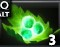, Iron Branch 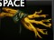, Wraith Band , Null Talisman 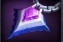, Bracer 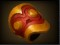, Magic Stick 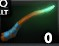, Boots of Speed 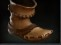, and etc. There are items that help you farm better, e.g., Radiance 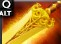, Battle Fury 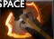, Maelstrom 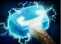, and Quelling Blade 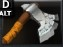. All these that I mentioned helps you farm more quickly and is usually as a first item of some pos 1 players. These are for the pos 1, pos 2, and pos 3 mostly. For pos 4 and 5, they usually buy support items or utility that support their team. E.g., Dust of Appearance 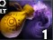, Glimmer Cape 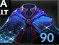, Smoke of Deceit 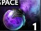, Observer and Sentry Wards 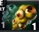, and etc. All these help your team by numerous ways, either, it gives vision, helps you escape, helps your team gank, and helps make invincible units appear.
There are late game items that helps your carry dominate the enemy team, pos 3 to become tanky or initiate, and supports that further helps the team. E.g., Daedaulus 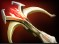, Crimson Guard 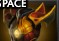, Refresher Orb 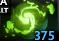, and Guardian Greaves 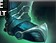.
There are late game items that helps your carry dominate the enemy team, pos 3 to become tanky or initiate, and supports that further helps the team. E.g., Daedaulus 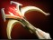, Crimson Guard 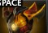, Refresher Orb 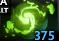, and Guardian Greaves 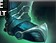.
Laning Phase
The laning phase can be broken down to three parts, the early game, mid game, and the late game. I will explain a bit on what each phase do mostly in that point of the game.
Early Game
Here, you will get the starting items (e.g., the ones that are stated above) to help your survive better in lane. In the safelane, both pos 1 and 5 are laning together, in the midlane, pos 2 is the only one there, and in the offlane, both pos 3 and 4 are there. Each lane has its own job in this phase, the safelane being: farm fast at early game to get items faster. The midlane being: disrupt enemies farm at this stage, where they gank in all lanes alongside with the pos 4. The offlane being: disrupting their carry so that they cant farm fast. Usually nothing too exciting is happening here as all you do is last hit, not die, and overall, more last hits. Unless in the midlane as all of the pressure is on you as when you fail the midlane at this phase, it is pretty much a lose game as they can snowball where the midlane can overpower all of the lanes.
Here is a video explaining more on it.
Mid Game
This point of the game is where the carries (or pos1) are now transitioning to become active (where they join fights). They join fights later as they need farm, when they dont have farm, they are practically useless. Furthermore, this point of the game is the deciding factor on which team will win. If both teams stand equal, it will most likely be a long game (45 mins - 1 hour).
Here is a video explaining more on it.
Here is a video explaining more on it.
Late Game
This is basically freedom. Where you can do anything you want and everyone is basically stacked (they have 6 items that max out their item slots). So basicaly, it is now all mind games. As everyone can now dominate one another. However, this is not always the case, there can be times where one team is dominating but they cannot push the high ground (third inner tower and onwards to their base). When this happens, one team plays defense and one team plays offense. But this does not happen oftenly as when you lose mid game, 90% of the time you lose the game. Thats why most of the time when this happens, they can "comeback" (win an unfavorable match, e.g., they have a < 20k net worth lead and in the end you won).